| A comparison theorem, Sobolev imbeddings and Konrachov theorem for Riemannian manifolds |
| A comparison theorem, Sobolev imbeddings and Konrachov theorem for Riemannian manifolds |
 on a Riemannian manifold.
on a Riemannian manifold.
on a Riemannian manifold.
on a Riemannian manifold.With Kondrachov’s theorem 5, one can uses the familiar "subsequence extracting" technique to find a minimiser of the quadratic functional 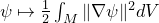 in a suitable subspace of 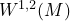 (method of Lagrange multiplier), one can prove the following results.
[Spectrum of 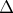] Let  be a compact Riemannian manifold then
be a compact Riemannian manifold then
The eigenvalues of 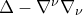 are 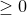.
The eigenfunctions of 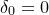 are constant functions.
The eigenvalue 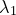 is the minimum value of the functional
| 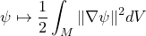 |
on the subspace 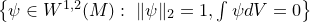. Moreover, first eigenfunctions are smooth.
Given be a compact Riemannian manifold, consider the Laplace equation on  :
:
| 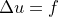 | (59) |
where 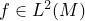, then:
There exists 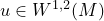 satisfying eq:lap-M in the weak sense if and only if 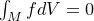
 is unique up to an additive constant.
is unique up to an additive constant.
If 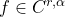 then 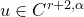.
| A comparison theorem, Sobolev imbeddings and Konrachov theorem for Riemannian manifolds |